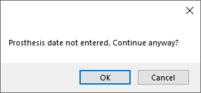

Procedure
View and edit procedure information, including procedure notes, from the Procedure Info window.
In the Chart Module, double-click a procedure to edit.

Alternatively,
- Double-click a procedure from the Account Module.
- Double-click a procedure from the Treatment Plan Module.
- Double-click a procedure from Edit Appointment.
To edit, delete, or set procedures complete, the logged-on user must have the correct Permissions.
Date

Date Entry: Initially this date is the day the procedure was entered. The date is updated when the procedure is set complete. It cannot be manually edited.
Date TP: The day the procedure was added to the treatment plan.
Date: Date of the procedure. This is the date used in the Chart and Account.
Time Start: Enter the procedure start time.
End: Only shows when Medical Insurance is turned on. Enter the procedure end time.
Now: Only shows when Medical Insurance is turned on. Inserts the current time. If no time exists in Time Start, button insert time heres. If there is already a start time, it inserts an end time instead. If both a start and end time exist, the button overrides the existing end time.
Final: Only shows when Medical Insurance is turned on. Automatically calculates the total minutes based on Time Start and End.
Original Date Comp: Only shows for Complete procedures if the Date is changed. Displays date procedure was originally set complete. Cannot be changed
Procedure and Treatment Area

Procedure: Procedure code of the attached procedure.
Description: Description of the attached procedure.
Change: Open the Procedure Codes List to choose a different Procedure Code. The Amount is updated to reflect the updated procedure.
- If a code is selected with a different treatment area than what is currently in use (e.g., tooth vs. surface), the code change will not be allowed due to treatment area mismatch. For example, a user cannot change a filling procedure to a prophy procedure, because the treatment area for a filling is Tooth and for a prophy is Mouth.
- Once the procedure has been attached to a claim, there are more complex steps to correct Incorrect Procedures on Claim.
Tooth/Surface: Options for tooth number and surfaces are different depending on the procedure code's Treatment Area set in Edit Procedure Code.
- Tooth: A single tooth number. Required if procedure code treatment area is set to Tooth. Supernumerary Teeth must be manually entered.
- Surfaces: B/F, V, M, O/I, D, L. Type manually or click a button to select. Click button again to clear. Required if procedure code treatment area is set to Surface.
- Quadrant: UR (upper right), UL (upper left), LR (lower right), LL (lower left). Required if procedure code treatment area is set to Quadrant.
- Sextant: 1 - 6 in United States. 03 - 08 in Canada. Required if procedure code treatment area is set to Sextant.
- Arch: U (upper), L (lower). Required if procedure code treatment area is set to arch. Maxillary codes default to U. Mandibular codes default to L.
- Tooth Range: Click and drag to select a range of teeth. At least one tooth must be selected if procedure code treatment area is set to Tooth Range. Teeth marked primary list the primary tooth letter. Only molars marked permanent are listed.
Amount: The billable fee of the procedure based on the fee schedule. Enter default fees in the Procedure Code List. The fee only shows if the logged-on user has the Show Procedure Fee security permission.
Hide Graphics: Check to hide this procedure on the Graphical Tooth Chart.
Diagnosis: Only one diagnosis per procedure allowed. If a procedure requires more than one diagnosis (e.g., cracked tooth, IP, Apical perio) add them as notes. Diagnoses do not affect the Graphical Tooth Chart. Customize options in Definitions: Diagnosis Types. To see diagnoses separately from the proposed treatment, see the comments regarding the Condition (Cn) Status.
Priority: Used to prioritize treatment in the Treatment Plan Module. Options can be customized in Definitions: Treat' Plan Priorities.
Prosthesis Replacement

This area is only visible if the procedure code has been set up as Is Prosthesis. This information is sent in e-claims only and is required before sending electronically.
Crown Bridge, Denture, or RPD: Select Initial or Replacement. If No is selected when closing the Procedure Info window, users are prompted with the window below. When attempting to save or send claims with the procedure attached, users also receive a warning that the claim is missing data.
Original Date: Required when prosthesis is marked as Replacement.
Is Estimated: Check if Original Date entered is an estimate. The flag is only supported in 5010 e-claims. For 4010 e-claims, there is no place to send this flag, but it may be useful for documentation. Enter this information for printed claims on the Edit Claim - General Tab.
E-Claim Note

E-claim Note: A place for short notes that pertain to this procedure. Limited to 80 characters for electronic claims. It should be used rarely and is only sent in e-claims or printed on the 1500-02-12 Claim Form, Box 24 (supplemental). It is not printed on other paper claims. The note is procedure level, not claim level. To enter a claim note, see Edit Claim - General Tab.
Right-Click the text box for additional options.
Procedure Status, Provider, and Referral

Procedure Status: The procedure status can be one of the following:
- Treatment Planned (TP): For work that is recommended, but not complete yet.
- Complete (C): The work is done and shows in the patient's account.
- Complete (In Process) (C/P): The procedure has been grouped with other related procedures. Implies other work must still be completed before a claim can be sent. (e.g., crowns).
- Existing-Current Prov (EC): Procedure was done in your practice before starting to use Open Dental.
- Existing-Other Prov (EO): Procedure was done by another provider, either before the patient came to your practice, or because they were referred out for treatment.
- Referred Out (R): Procedure the patient needs, but that will be done at another office. Once the work has been completed, users can change the status of the procedure to EO.
- Condition (Cn): Chart caries and other conditions as a separate step in order to see them on the Graphical Tooth Chart. Most offices will not use this status. To use this status, users must also add dummy procedure codes that represent the conditions being shown. The mouth area and paint type of each dummy code must be carefully set.
- Treatment Planned Inactive (TPi): Procedures that are not part of an active treatment plan.
- Deleted (D): Procedure has been deleted. Only displays in Chart Module when audit is enabled. Once deleted, information is read-only. Procedures status and information cannot be edited.
Set Complete: Assign the status of complete, insert default procedure notes, change the Date Entry and Date to today's date, and close the window.
Clinic: The Clinic associated with this procedure. Only visible when Clinics is enabled.
Provider: The provider associated with the procedure (i.e., treating provider).
- Set Procedure Fee Update Behavior in Preferences to determine how the procedure fee is affected when a provider with a different fee is selected.
- If using Clinics and providers are restricted to Clinics in security, only providers available for the selected Clinic are options.
- If the procedure is set complete and attached to a payment split, changing the provider here also changes the provider on the attached payment splits.
Referral: Click [...] to refer this procedure to a Referral source. Referrals out can be tracked individually.
Notes

User: Identifies the most recent User associated with the Notes and to any electronic signature (below). Defaults to the logged-on user. To override the user, click [...] then enter log-on credentials.
Auto Note: Click to manually insert Auto Notes.
Edit Auto Note: Only appears when an Auto Note has been used and prompts have been left unanswered. Click to complete Auto Note.
Notes: For Procedure Notes. Usually empty until the procedure status is set complete. Once set complete, default procedure notes are automatically copied and staff can make changes to the notes as needed.
- Create default procedure notes from Procedure Code.
- If a default procedure note contains an Auto Note (and the Preference, Procedures Prompt for Auto Note, is enabled) reopening the procedure triggers any Auto Note prompts.
- If a note contains quotes (i.e.,""), then information must be filled in between the quotes or the note is considered Incomplete. Use the Incomplete Procedure Notes Report to find incomplete notes.
- If EHR is enabled, click Search, enter the search term, then click OK to search the Notes field. The first matching result is highlighted.
- If the procedure was created or completed today, the cursor is automatically at the end of the Notes. Otherwise, the cursor is automatically shown at the beginning of the Notes.
- Right-Click the text box for additional options.
Signature/Initials: Sign the Notes with an Electronic Signature. The user tied to the Notes is indicated in the User box above the Notes area.
- If Notes are edited later or the User is changed, the signature is automatically cleared.
- Enable Block procedure note signatures when there are uncompleted auto note prompts in Preferences to prevent users from signing Group Notes with incomplete auto notes.
- An Alert is generated when a signature is cleared by another user.
- If a signature is cleared by another user without adding a replacement, users are warned when saving the procedure.
Tabs
Procedure - Financial Tab: View and add insurance estimates, adjustments, payments, and TP Procedure Discount.
Procedure - Medical Tab: To view this tab, Medical Insurance must be enabled in Show Features. Use it to attach ICD-10 diagnosis codes to the procedure (if required by insurance) or enter other medical claim information.
Procedure - Misc Tab: Medicaid and Public Health options.
Save, Edit, or Delete
Delete: Delete the procedure. Deleted procedures can be viewed by enabling Audit mode from Show Chart Views, but deleting cannot be undone. If the Appointments require procedures preference is enabled, the below message appears when deleting the last procedure attached to an appointment.

Edit Anyway: Button only appears on procedures attached to claims or preauthorizations. Click to edit procedure information. Some fields (e.g., procedure code) still cannot be edited even after clicking this button. Read-only fields are greyed out after clicking this button.
OK: Close the window and save changes.
Cancel: Close the window. Some changes are saved.